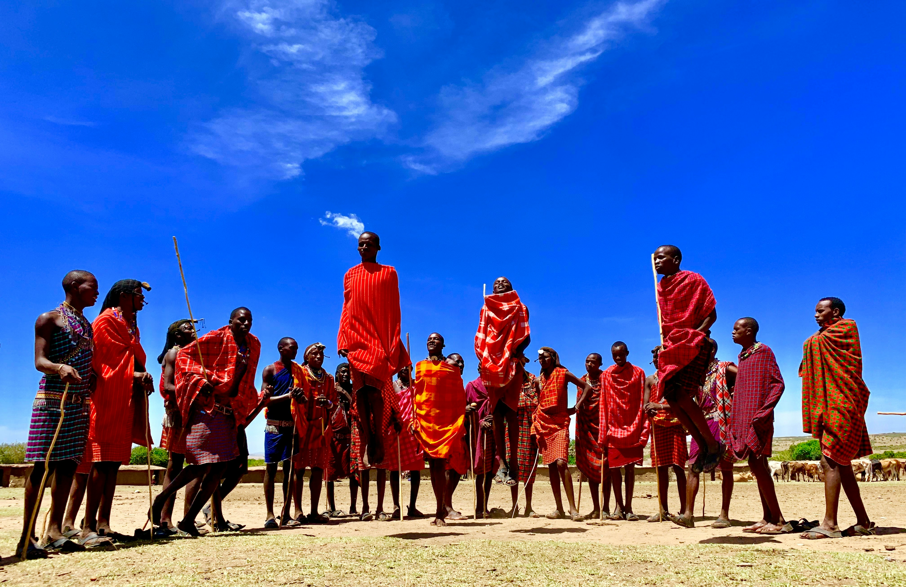

The Man
The Man
A short biography
My name is James Gacheru , and I have spent the last six years photographing Nairobi the way it actually feels: unhurried mornings, matatu-lit evenings, and the quiet spaces in between. I shoot mostly on film, because I like that a photograph has to be earned before it can be seen.
This website is my contact sheet a curated shelf of the frames I keep returning to. Everything here was shot, and developed by love and much attention.
- Based in: Nairobi, Kenya
- Shoots on: 35mm film digital
- Available for: portraits, events, editorial work
My favorite photographs
Eight frames, pulled from eight different rolls. Each one taught me something.
-
N; 01

Dusk, River Road
-
N 02

Baba Otieno, Kibera
-
N 03

Wet Tarmac, Moi Avenue
-
N 04

Upper Hill, Nairobi
-
N 05

Mathare, NAIROBI
-
N06

white beaches, Mombasas
-
N07

Bissil, Kajiado
-
N&08

Garden City Mall, Thika Road
Get in touch
Have a shoot in mind, or just want to talk about film stock? Send a note below and I will write back within a couple of days.